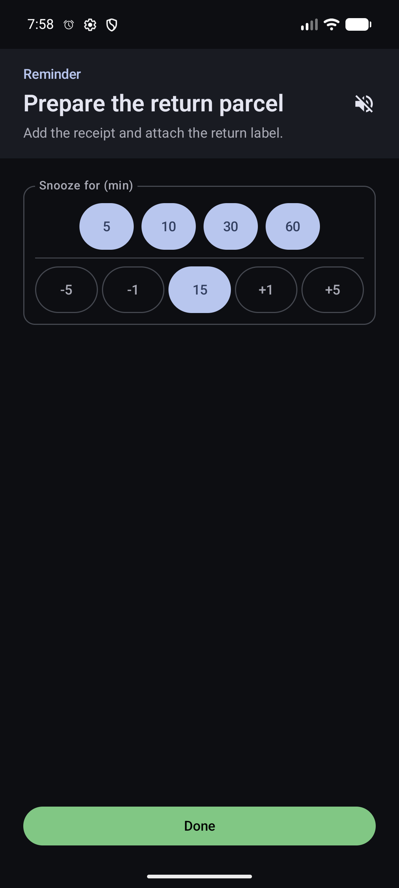
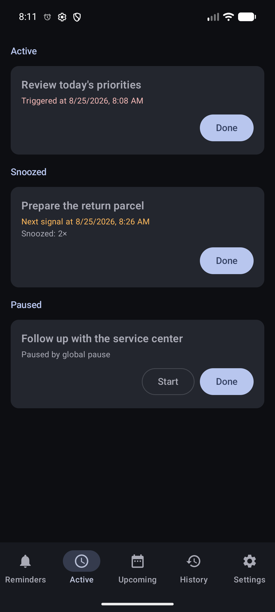
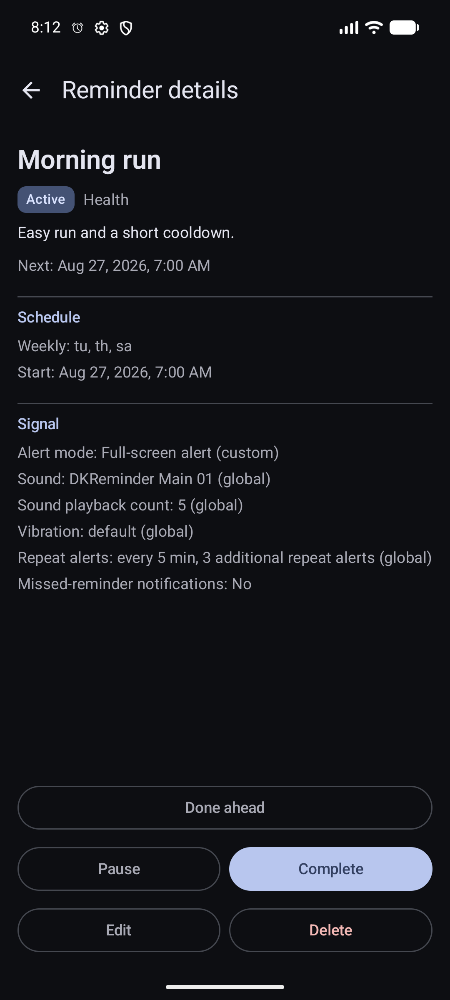

Alerts and actions
Handle one occurrence without changing the reminder schedule.
A reminder stores the rule and future schedule. An occurrence is one concrete event created from that rule. You can mark it Done or Snooze it separately; Complete stops the whole reminder.

Active, snoozed, and paused occurrences
The scheduled time has arrived and the occurrence needs your response. It may open full screen or appear as a system notification.
You chose a later time for this same occurrence. The original reminder schedule remains unchanged.
An open occurrence was paused because its reminder or global pause was enabled.
Open Active to see these states in separate groups. Open an item to act on that concrete occurrence.

Done closes one occurrence; Complete finishes the reminder
Mark one occurrence Done
- Open the system notification, full-screen view, or the item in Active.
- Choose Done.
- Confirm that the occurrence leaves Active. Open its target day in Calendar when you want to review the Done result later.
Where are Done and Snooze
Complete the whole reminder
Open the reminder details and choose Complete only when you want the rule to stop creating future occurrences. The reminder moves to Completed rather than Trash.
Where are Complete and Done ahead

Snooze moves only the current occurrence
Snooze choices are app-wide. New installations start with a 15-minute default and quick choices for 5, 10, 30, and 60 minutes.
Choose the values shown during an alert
- In Settings → Snooze, change the default delay. It becomes the one-tap Snooze action in a system notification and the starting custom value in the full-screen view.
- Add or remove quick minute choices. The full-screen view shows the current list as buttons; at least one quick choice remains.
- During a full-screen alert, use the −5, −1, +1, and +5 controls when none of the quick choices fits. The chosen delay can be as short as one minute.
- Open the active occurrence.
- Select the delay in the Snooze area.
- Check the confirmation with the next signal time.
You can snooze the same occurrence more than once. It may later overlap with a new occurrence created by the reminder schedule; DKReminder keeps them separate.
DKReminder reads the app-wide snooze values when it shows the alert. Changing Settings later does not rewrite buttons on an alert that is already open; the next alert uses the current values.
Complete and create a copy
For a currently snoozed occurrence, this action marks that occurrence Done and opens an independent reminder draft with the same details. Saving the draft creates a new reminder; it does not complete the original recurring rule.
Mark the next occurrence Done ahead
Use Done ahead in reminder details when you already completed the task before the next planned time.
- Open the reminder details.
- Review the next planned time.
- Choose Done ahead and confirm.
The next planned occurrence is recorded as Done without waiting for its alert. If it was the last occurrence in the schedule, the reminder can also become completed.
Repeat alerts, sound playback, and missed reminders
A repeat alert is another attempt to get your attention for the same occurrence when you have not chosen Done or Snooze.
The app-wide repeat rule
With the initial settings, DKReminder sends up to three additional alerts at 5-minute intervals. In Settings → Repeat alerts without a response, you can turn this behavior on or off and change the shared interval and additional count.
The rule for one reminder
When creating or editing a reminder, open the full editor and find Repeat alerts without a response.
Uses the app-wide rule when a new occurrence is created. Future occurrences follow later Settings changes; an occurrence that is already active keeps the values with which it started.
Turns automatic repeat alerts off for this reminder, even when the app-wide rule is enabled.
Saves a separate interval and additional count for this reminder. Later app-wide changes do not replace them.
Where do I configure this while creating or editing

- Repeat alerts do not create new scheduled occurrences and do not change recurrence.
- Choosing Done or Snooze ends the repeat chain for that occurrence.
- The sound playback count is different: it controls consecutive sound plays during one alert.
- Swiping away a system notification is not Done or Snooze.
- If the repeat chain ends without a response, Calendar shows No response on the occurrence's target day.
- Missed-reminder notifications require Pro; past occurrence records in Calendar remain available without Pro.
Reminder pause, global pause, and Calendar
Pause one reminder
Pausing a reminder stops new scheduled occurrences and pauses its open occurrences. Resuming the reminder continues scheduling from the current time, but already paused occurrences remain available in Active until you explicitly start or resolve them.
Global pause
Global pause is a manual switch for all reminders. It pauses open active and snoozed occurrences and stops new ones from being created. Turn off global pause resumes normal scheduling; it does not automatically restart every paused occurrence.
Calendar
Open the occurrence's target day in Calendar to see its planned time, result, snooze information, and a snapshot of the reminder at that time. This distinguishes Done, No response, and occurrences closed because a reminder was completed or deleted.
Related guides
Still need help?
Email reminder@dvkworks.com with the reminder title, planned time, and the state shown in Active or Calendar.